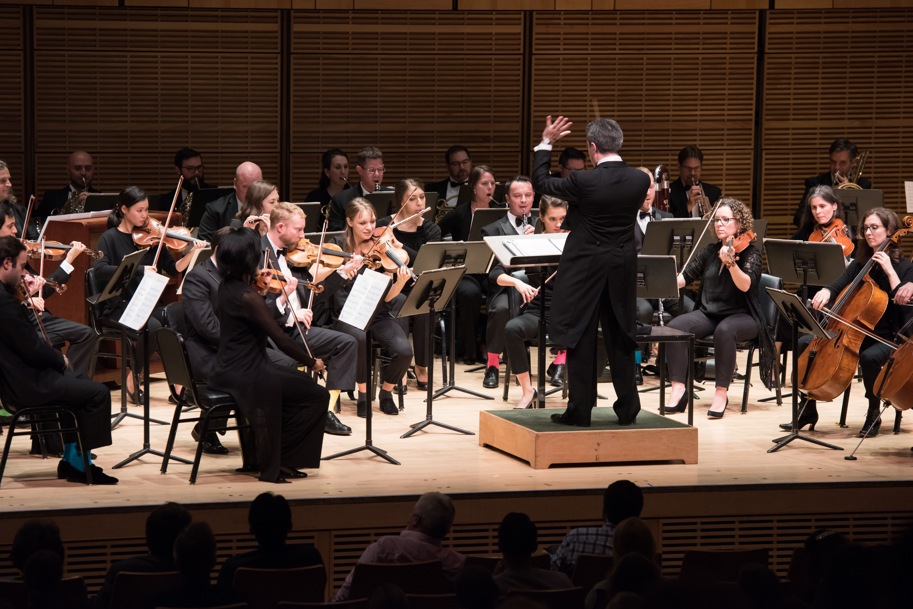
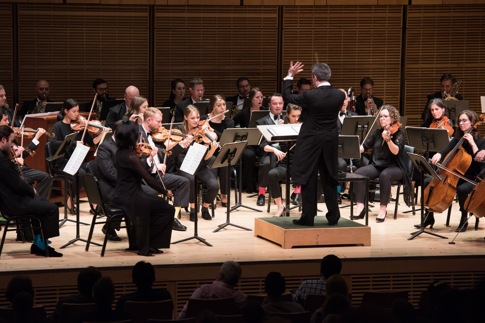

About
Katie Buchholz is a developing coder who is excited to take her coding to the next level. She graduated at Ball State University with a degree in telecommmunications in digital audio production in 2021 and currently works at Target as a Service Adovcate. Even though this is her first time coding intensively, she has taken a web development course with Michael Lee at Ball State University.
She currently works at Target as her day job, but she has done various volunteer work. Some of which include A/V booth volunteer (St. Luke's Indy and St. Mark's Carmel, IN), camp counselor (M3 Theater Camp), music and skits judge (Staatskongress at Ball State), and even music library with the ISO!
Some of her interests include cooking, writing, orchestra (playing viola), and theatre (watching and being on lights and sound board).
Favorite theater productions and movies include Inside Out series, Oliver!, Beauty and the Beast, Toy Story series, The Music Man, Snow White, Pinocchio, and others.
Portfolio
.png) 
